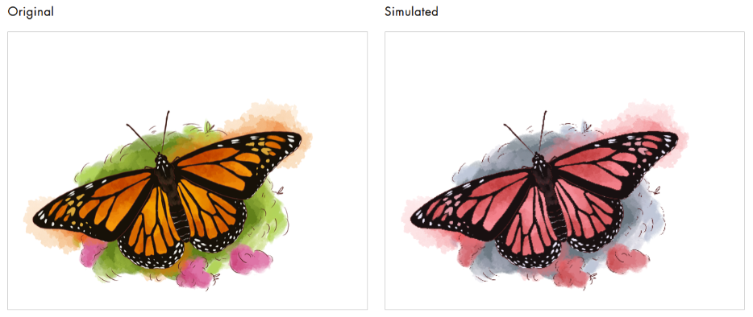
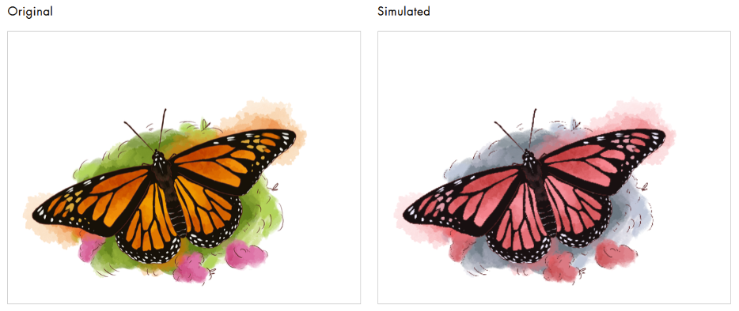

In collaboration with the U.S. Fish and Wildlife Service, our team undertook the challenge to design educational signage for national parks and wildlife refuges. Our primary goal was to create visually engaging and informative signs that would capture the attention of visitors while providing valuable information about the local wildlife. By combining hand-drawn illustrations with concise, user-focused text, we aimed to inspire curiosity and foster a deeper appreciation for wildlife.
10 weeks
Illustration
Typography
Branding
User Persona
Graphic Design
Graphic Designer
Michelle Mott
Amy Hong
Mel Pagan
Design Process
Our Illustrations (Done by collaborators and myself) were designed to be both scientifically informative and artistically appealing. Blending seamlessly with the natural park environment was a priority of ours. Adjustments were made based on feedback from U.S. Fish and Wildlife representatives which helped us to ensure the final signs were suited for diverse audiences.
Our Goals
Engage Visitors by designing signs that stand out in a natural setting and hold the reader’s attention.
Educate Effectively by delivering key facts about wildlife in a way that is clear, concise, and accessible to a broad audience.
Blend Art with Functionality and balance artistic illustrations with legible and informative content.
Designing for Accessibility
Designing for accessibility was a priority throughout the project. Recognizing that a significant portion of the population experiences color blindness, we carefully selected color combinations that maintained high contrast and visibility for all users. By using patterns and textures in addition to color, we ensured that key elements of the signage remained distinguishable regardless of visual impairments.
 



User Research
A crucial part of our design process involved understanding the preferences and behaviors of park visitors. Based on polling and observational data, we developed detailed personas representing typical park visitors, such as families, hikers, and wildlife enthusiasts. These personas highlighted key motivations (e.g., educating children, spotting rare animals) and potential pain points (e.g., signs being too dense or unappealing).
Feedback and Iterations
Throughout the project, we held regular meetings with representatives from the U.S. Fish and Wildlife Service to ensure alignment with their vision and goals. This collaborative approach allowed us to refine our designs iteratively, ensuring the final products met both agency standards and visitor needs. These sessions included:
Reviewing initial concepts and prototypes.
Receiving constructive feedback on layout, tone, and visual style.
Learning about specific messaging priorities, such as promoting conservation efforts.
Conclusion
This project exemplifies the power of combining design skills with user research and cross-organization collaboration. It was an opportunity to bring artistry and purpose together, creating something that will leave a lasting impression on park visitors while promoting awareness and respect for wildlife.